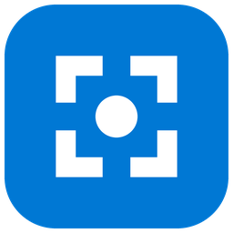
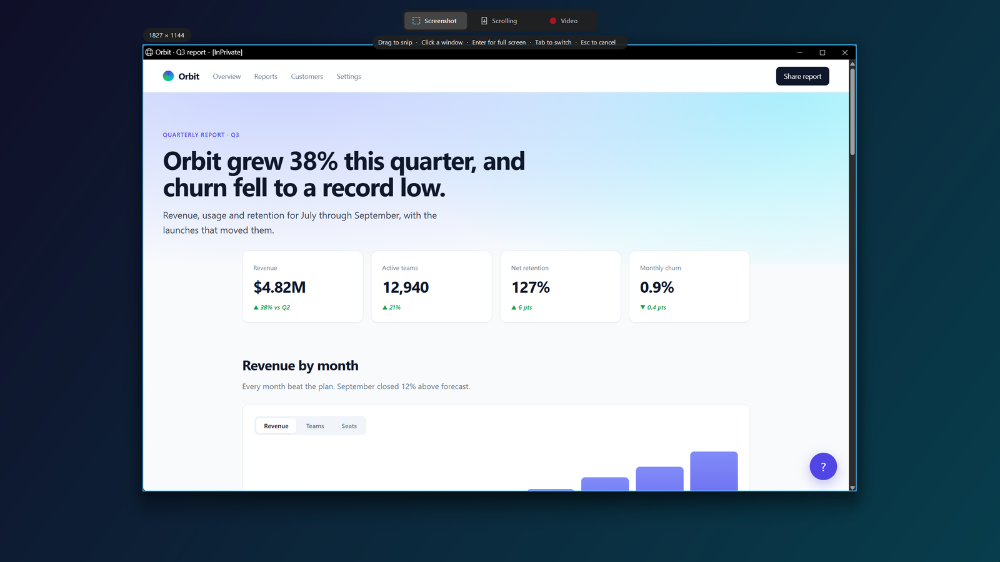
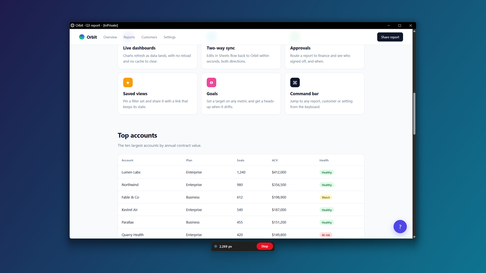
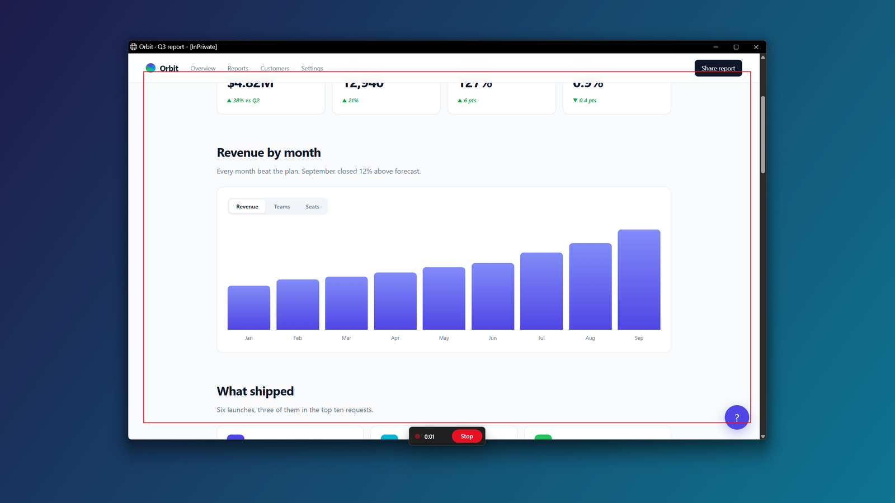
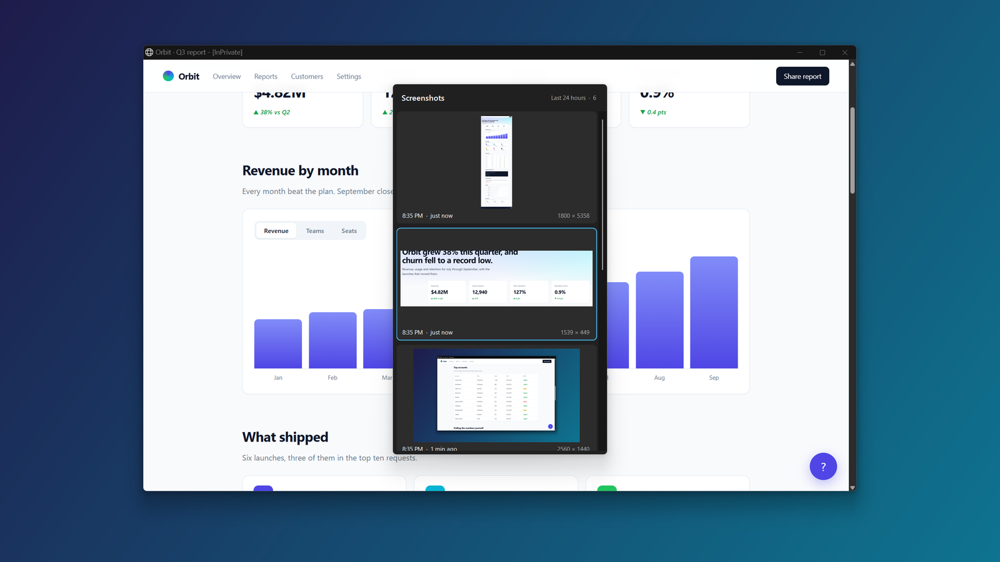

Snip
A small, fast replacement for the Windows Snipping Tool. Screenshots, full-page scrolling captures and screen recordings with auto-zoom, all on Win+Shift+S.





A small, fast replacement for the Windows Snipping Tool. Screenshots, full-page scrolling captures and screen recordings with auto-zoom, all on Win+Shift+S.



